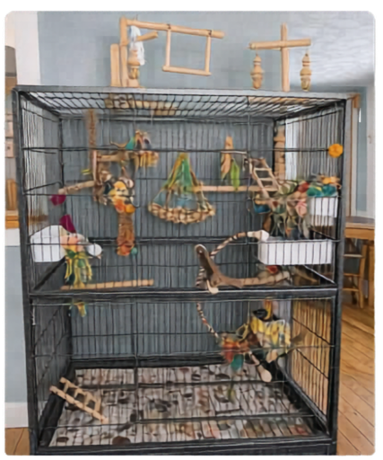

Cage Setup
A bird’s cage is one of the most important parts of their environment. While birds should spend time outside their cage every day, the cage still serves as their home, resting place, and safe space.
A properly set up cage helps birds stay active, comfortable, and mentally stimulated. A poorly designed cage, on the other hand, can lead to boredom, stress, and health problems.
The goal of a good cage setup is to create an environment that allows birds to move, climb, explore, and interact with their surroundings.
Choosing the Right Cage Size
One of the most important factors in bird care is cage size.
Birds need enough space to stretch their wings, climb, and move around comfortably. A cage that is too small can restrict movement and negatively affect both physical and mental health.
As a general rule, the cage should be as large as possible for the space available.
Even small birds like budgies and cockatiels benefit from larger cages such as flight cages, which allow them to move horizontally from perch to perch.
Remember that a cage is not meant to keep a bird trapped. It should provide enough space for movement while the bird is inside.

Example of a well-enriched bird cage setup
Avoid Round Cages
Round cages are often sold because they look decorative, but they are not recommended for birds.
Round cages can make birds feel uncomfortable because they remove clear corners where birds naturally like to rest. They also limit how perches and toys can be placed.
Rectangular cages are usually better because they provide more usable space and allow birds to feel more secure.
Natural Perches
Perches are where birds spend most of their time, so choosing the right type is important.
Natural wood perches are usually the best option because they provide different textures and sizes. This helps exercise the bird’s feet and prevents pressure sores that can develop when birds stand on the same smooth surface for long periods.
Using a variety of perch sizes and textures helps keep the bird comfortable and encourages movement around the cage.
Natural branch perches, like the one shown in the example cage, are especially beneficial.
Toys and Mental Stimulation
Birds are intelligent animals that need regular mental stimulation.
Providing toys inside the cage allows birds to chew, shred, explore, and interact with their environment.
- shredding toys made of paper or natural fibers
- wooden chew toys
- climbing ropes or ladders
- puzzle toys
- bells or hanging toys
The cage shown in the example photo includes several types of enrichment toys that encourage birds to interact with their environment.
Toys should also be rotated regularly so that birds do not become bored with the same objects.
Foraging Opportunities
In the wild, birds spend a large part of their day searching for food.
Pet birds often receive their food in a bowl where it requires no effort to obtain. While convenient, this removes an important natural behavior.
Foraging toys help birds work for their food, which provides mental stimulation and prevents boredom.
Foraging toys may involve hiding food inside paper, baskets, toys, or small containers so birds must explore and interact to find their food.
The example cage includes several toys that allow birds to shred and explore, which encourages natural foraging behavior.
Placement of Food and Water Bowls
Food and water bowls should be placed in areas where they remain clean and easily accessible.
It is best to use stainless steel bowls, which are easier to clean and less likely to hold bacteria compared to plastic containers.
Bowls should be cleaned daily and fresh water should always be available.
Avoid placing bowls directly under perches where droppings may fall into the food or water.
Cage Layout and Space
A well-organized cage allows birds to move easily between perches, toys, and food bowls.
Perches should be placed at different heights so birds can climb and explore the cage naturally. Toys should not overcrowd the cage but should provide enough activity to keep the bird engaged.
The example cage shown includes:
- multiple perches
- shredding toys
- climbing structures
- foraging toys
- open space for movement
This type of layout encourages birds to remain active and curious.
Out-of-Cage Play Areas
Many bird cages also include play areas on top of the cage.
Play stands and climbing structures allow birds to spend time outside their cage while still having a safe place to land and explore.
The play structure shown on top of the cage in the example photo provides additional enrichment and encourages birds to climb and interact with their environment.
Cleanliness and Maintenance
Keeping the cage clean is essential for a bird’s health.
Cage liners should be changed regularly, and food bowls, perches, and toys should be cleaned often to prevent bacteria buildup.
A clean cage helps prevent illness and keeps the environment comfortable for birds.